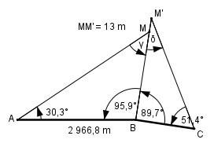

Aufgabe 203 Ein Vermessungsschiff ist dabei, eine Küste zu vermessen. Der Abstand zwischen den Stationen A und B ist bekannt und beträgt 2 966,9 m. Um den Abstand zwischen Station B und C zu ermitteln, werden vom Land aus der Schiffsmast M als Bezugspunkt gewählt und die Winkel MAB = 30,3°, ABM = 95,9°, MBC = 89,7° undBCM = 51,4° gemessen. Die Messung des Winkels BCM hat sich verzögert, dabei ist das Schiff 13 m in die Verlängerung von BM abgetrieben worden. Wie groß ist BC?

γ = 180° - 30,3° - 95,9° = 53,8° Im Dreieck ABM: Fall SWW: Sinussatz: AB BM -------- = ------------ |*sin 30,3° sin γ in 30,3° 2 966,9 m * sin 30,3° BM = ----------------------- = sin 53,8° 2 966,8 m * 0,5045 = --------------------- = 1 854,7 m 0,807 BM’ = BM + 13 m = 1 854,7 m + 13 m = 1 867,7 m Im Dreieck BCM’: δ = 180° - 51,4° - 89,7° = 38,9° Fall SWW: Sinussatz: BM’ BC ----------- = ------- |*sin δ sin 51,4° sin δ BM’ * sin δ 1 867,7 m * sin 38,9° BC = -------------- = ----------------------- = sin 51,4° sin 51,4° 1 867,7 m * 0,628 = -------------------- = 1 500,9 m 0,7815